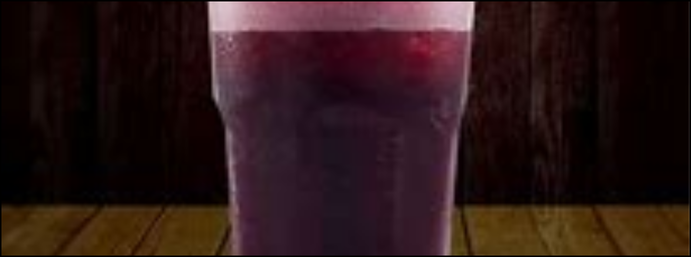
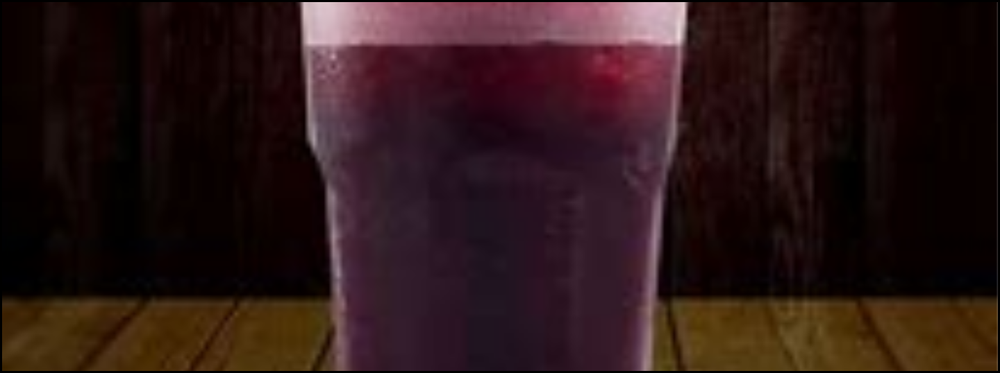

Chicha
Morada
 

La chicha morada,, es una bebida del Perú a vase de un vegetal peruano.
Ingredientes (3 litros)
- 1 kilo de maíz morado
- 1 piña (cáscaras y restos de la fruta)
- 1/4 de kilo de membrillo
- 3 litros de agua
- 10 gramos de canela entera
- 8 unidades de clavos de olor
- Azúcar
- 3 limones

Preparación (60 a 180 minutos)
- Desgrana el maíz morado.
- Coloca el maíz morado en una olla.
- Añade la cáscara de piña, el membrillo y el agua.
- Llévalo al fuego.
- Agrega la canela y el clavo.
- Déjalos hervir por 45 min
- Déjalo enfriar por un par de horas.
- Cuélalo.
- Endúlzalo al gusto.
- Agregale el jugo de limón. Remúevelo.
- Sírvelo.
Consejos:
- La cáscara y las partes de la piña no se comen. Reserva la pulpa para comer.
- Si deseas almacenar la chicha morada, no le pongas azúcar ni limón, y llévala a refrigerar o congelar bien tapada.